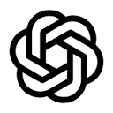

Product Atlas
搜索产品…
⌘K
定价
提交
切换语言
Toggle theme
登录
发现
周榜
本周产品榜
每周一重置，按登录用户的投票数排名。付费置顶在首页优先展示，但不影响这里的票数排名。
当前周期：11 月 2 日 – 11 月 8 日 · 2026-W45
11 月 2 日 – 11 月 8 日 · 本周
10 月 19 日 – 10 月 25 日
10 月 12 日 – 10 月 18 日
10 月 5 日 – 10 月 11 日
9 月 28 日 – 10 月 4 日
#
工具
分类
变化
本周票数
1
Claude
注重思考的 AI 助手，擅长写作、研究、编程与长文档处理。
AI 助手
—
0
2
Consensus
基于科学文献的证据型答案。
研究与搜索
—
0
3
Perplexity
会联网检索并标注来源的答案引擎。
研究与搜索
—
0
4
Replit
用 AI 智能体从提示词构建并上线应用，托管内置。
开发工具
—
0
5
Jasper
面向团队的品牌一致性营销文案。
写作
—
0
6
Pika
把想法和图片变成简短有趣的视频。
视频
—
0
7
Gemini
Google 的多模态助手，已接入搜索、Gmail 与文档。
AI 助手
—
0
8
Ollama
一条命令在本地运行开源大模型。
AI 助手
—
0
9
DeepSeek
开放权重的推理模型，提供免费聊天应用与低成本 API。
AI 助手
—
0
10
Krea
实时图像生成、放大与增强。
设计工具
—
0
11
Synthesia
用脚本生成演播室级的主持人视频。
视频
—
0
12
Suno
用文字提示生成带人声的完整歌曲。
音频与音乐
—
0
13
Udio
创作与改编任意风格的音乐。
音频与音乐
—
0
14
Bolt
在浏览器里用提示词生成、运行、修改并部署全栈应用。
开发工具
—
0
15
Notion AI
在 Notion 工作区内搜索、写作与总结。
效率工具
—
0
16
HeyGen
会说话的数字人，支持任意语言的视频翻译。
视频
—
0
17
Runway
用前沿模型生成与编辑视频。
视频
—
0
18
Leonardo.Ai
生成可直接用于生产的插画与素材，控制精细。
设计工具
—
0
19
Elicit
检索、总结并从论文中提取数据。
研究与搜索
—
0
20
Claude Code
在终端、IDE 和浏览器中工作的智能编程工具。
开发工具
—
0
21
Midjourney
用文字提示生成富有艺术感的图像。
设计工具
—
0
22

ChatGPT
OpenAI 的对话助手，可用于写作、分析、编程和日常问答。
AI 助手
—
0
23
Cursor
AI 代码编辑器：跨代码库的自动补全、对话与智能体。
开发工具
—
0
24
Otter.ai
自动生成会议记录、转写与摘要。
效率工具
—
0
25
ElevenLabs
拟真语音合成、声音克隆与配音。
音频与音乐
—
0
26
GitHub Copilot
内置在 VS Code、JetBrains 与 GitHub 中的 AI 结对程序员。
开发工具
—
0
27
v0
描述界面或应用，直接得到可部署的 React 代码。
开发工具
—
0
28
Grammarly
在任何输入场景提供写作辅助。
写作
—
0
29
Gamma
一句话生成精美的演示文稿、文档与网页。
效率工具
—
0
30
Ideogram
擅长文字与排版的图像生成工具。
设计工具
—
0
Esc
↑
↓
切换
↵
选中
esc
关闭
Product Atlas
浏览
发现
产品
分类
开发者
定价
SEO 诊断
周榜
最新收录
更多
提交产品
我的提交
Toggle theme
登录